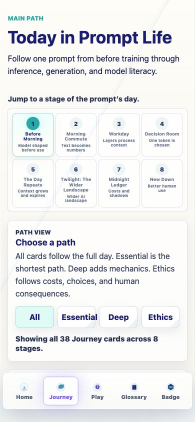
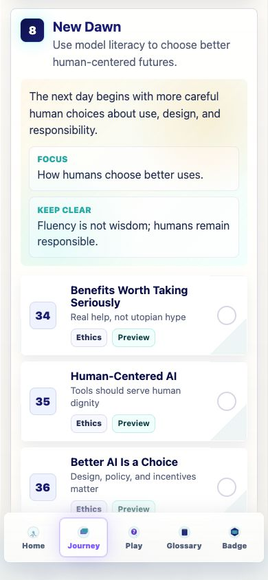
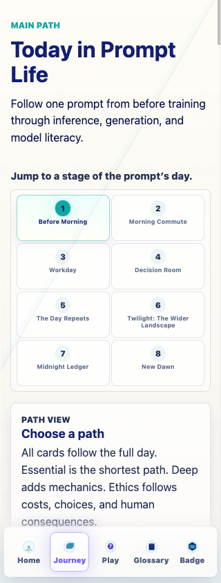

Prompt Life v0.15.1
Navigation Polish Report
Date: 2026-06-05. Scope: make the primary Journey navigation reliably return to the top of the Journey overview without changing curriculum, games, section architecture, or progress rules.
Response Summary
The bottom Journey nav now works as a dependable "back to the top of Journey" action. It exits Learn, Preview, or Review card views safely, opens Journey, scrolls the app shell to the top after render, and focuses the Journey heading. The eight stage buttons still scroll to their individual sections.
What Changed
- Bumped visible app version to
0.15.1. - Added a one-shot Journey-top navigation request.
- Routed Home's View map action and the bottom Journey nav through the same top-of-Journey path.
- Added shared helpers:
scrollAppToTop()andscrollJourneyToTop().
Preserved
- Stage buttons still call
scrollToJourneySection(). - The lesson card Return to Journey action still returns near the current lesson section.
- Preview, Review, and Learn progress behavior is unchanged.
- Reduced-motion preference is respected by scroll helpers.
Files Changed
src/main.tsxdocs/REVIEW_NOTES.mddocs/curriculum/V0_15_1_NAVIGATION_FIX.mddocs/curriculum/prompt-life-v0-15-1-navigation-polish-report.htmldocs/curriculum/prompt-life-v0-15-1-navigation-polish-report.pdfdocs/screenshots/v0-15-1-journey-top-after-nav.pngdocs/screenshots/v0-15-1-stage-link-new-dawn.pngdocs/screenshots/v0-15-1-journey-top-320.png
Manual QA Result
- 390px: Home to Journey opens at top.
- 390px: Journey scrolled down, then Journey bottom nav returns to top.
- 390px: Midnight Ledger and New Dawn stage links still scroll to sections.
- 390px: Journey bottom nav after a stage jump returns to Journey top after smooth scroll settles.
- 390px: Preview, Review, and Learn card modes exit to Journey top through bottom nav without changing completion behavior.
- 390px: Play, Glossary, and Badge to Journey open at top.
- 320px: isolated browser capture verified Journey title, all eight stage buttons,
scrollTop: 0, and no document or stage overflow.
Build Result
npm install: passed.npm run typecheck: passed.npm run build: passed.npm run build:pages: passed.git diff --check: passed.
Known issue: Vite still reports the existing single JavaScript chunk above 500 kB after minification.
Next Three Recommended Steps
- Add a small automated interaction test for bottom-nav scroll behavior.
- Split the large app bundle once content stabilizes.
- Do a focused keyboard and reduced-motion accessibility pass on Journey navigation.
Screenshot: Journey Top After Bottom Nav
390px app browser after tapping Journey from another state.

Screenshot: Stage Link Still Works
390px app browser after tapping the New Dawn stage link.

Screenshot: 320px Journey Layout
Isolated 320px capture with Journey at the top and all eight stage buttons visible.
